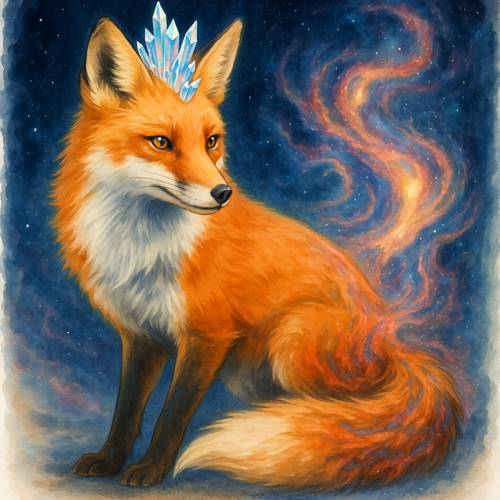
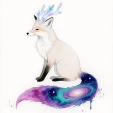
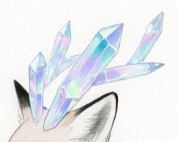
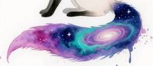

Grammar — In the watercolor style, a fox has crystal-like horns and its tail is
In the watercolor style, a fox has crystal-like horns and its tail is not fluffy, but consists of flowing nebulae.

Direct — one call, no iterationContinuum — Qwen3.8-27B + Qwen-Image
Judge — Direct
FAILGrammar - Negation — The fox's tail is depicted as a standard fluffy, furry tail with a white tip. It is not made of nebulae, and therefore the 'not fluffy' condition is not met.
FAILCompound - Imagination — The fox has a crown of light blue, translucent crystals on its head, which fulfills the 'crystal-like horns' part of the prompt. However, the tail is a conventional fluffy, furry tail, from which flowing, nebula-like energy emanates. The tail itself does not 'consist of' flowing nebulae.
PASSStyle — The image is rendered in a watercolor style, characterized by soft color blending, visible brushwork, and a texture that resembles paint on paper, particularly in the background and along the edges of the subject.
Judge — Continuum
PASSGrammar - Negation — The fox's tail is not depicted with a fluffy, fur-like texture. Instead, it is rendered as a flowing, cosmic pattern of colors and shapes, which is consistent with the negative constraint of 'not fluffy'.
PASSCompound - Imagination — The image features a fox with multifaceted, translucent horns that resemble crystals on its head. The fox's tail is depicted as a flowing nebula, complete with swirling colors like purple, blue, and teal, along with stars and a central spiral galaxy.
PASSStyle — The image is rendered in a watercolor style, characterized by the textured paper background, soft color washes and blends, visible paint splatters and drips, particularly around the tail, and the transparent quality of the pigments.
What the agent did
Thinking
The user is asking for a watercolor-style image: a fox with crystal-like horns, and a tail that isn't fluffy but made of flowing nebulae. Let me generate with qwen-image. I should write a detailed prompt. Watercolor style, a fox with crystal-like horns (like translucent gemstone/ice horns), and a tail made of flowing nebulae (cosmic clouds, starry, swirling galaxies) rather than fluffy fur. First, let me generate at 1024x1024. Prompt: "Watercolor painting of a fox sitting gracefully, the fox has crystal-like translucent gemstone horns on its head like prismatic quartz, its tail is not fluffy fur but made of flowing cosmic nebulae, swirling galaxies of purple, pink and blue cosmic dust with tiny stars, soft watercolor washes, wet-on-wet technique, delicate ink linework, white paper background, ethereal and whimsical" After that, inspect, edit as needed, and mark the best.
Step 1 — `generate_image`
{
"model": "qwen-image",
"prompt": "Delicate watercolor painting of a graceful fox sitting in profile, rendered with soft wet-on-wet washes and fine ink linework on textured white paper. The fox has crystal-like horns growing from its head: translucent prismatic quartz horns with subtle facets and a faint iridescent glow. Its tail is not fluffy fur but a flowing, ribbon-like tail made of nebulae: swirling cosmic gas clouds in violet, magenta, teal and deep blue, with tiny pinprick stars and a soft galaxy spiral, trailing and dissolving into the paper. Loose watercolor blooms, pigment granulation, bleeding edges, ethereal and whimsical mood, lots of white negative space.",
"width": 1024,
"height": 1024
}
Result img_0

Thinking
The image turned out great. Let me check: a watercolor-style fox, crystal-like horns (translucent, prismatic, with iridescence), and a tail made of flowing nebulae with a galaxy spiral and stars, not fluffy. The watercolor style is clearly expressed—soft washes, white paper, ink lines. Let me zoom in to check the details: the horns look crystal-like, and the tail is clearly nebula-like. One thing I'm wondering about: is the tail connected to the fox? Yes, it flows out from the rear of the fox. The fox's body itself has fur texture, but that's fine—the prompt only said the tail isn't fluffy. Let me quickly inspect the horn and tail regions to make sure the quality is good.
Step 2 — `inspect_region`
{
"image": "img_0",
"roi": "the crystal horns on the fox's head",
"padding": 0.1
}
Result img_1

Step 3 — `inspect_region`
{
"image": "img_0",
"roi": "the nebula tail",
"padding": 0.05
}
Result img_2

Thinking
Both details check out: 1. Horns: Translucent crystal shards with facets, prismatic iridescence (pale blue, pink, lavender, mint) — clearly crystal-like, watercolor rendering. 2. Tail: A flowing nebula tail with galaxy spirals, stars, and violet/teal watercolor washes — clearly not fluffy fur, but cosmic gas clouds. The overall image is a clean watercolor on white paper, the fox is seated in profile, and the composition is beautiful. All elements of the prompt are present and correct. This is good enough — no edits needed. Mark img_0 as the best and finish.
Model
Both key features are being rendered as intended: the horn is a faceted, translucent, prismatic crystal shard, and the tail is a flowing, nebula-like ribbon with galactic swirls and pinprick stars, not fluffy fur. The overall image is also a proper watercolor — soft washes, fine ink linework, granulation, and white paper with negative space. All elements of the prompt are present and correct, so this is the version I'll be submitting.
Step 4 — `mark_best`
{
"image": "img_0",
"reason": "Watercolor fox with faceted crystal-like prismatic horns and a flowing nebula tail (galaxy swirl, stars, no fluffy fur); all prompt elements verified via close-up crops."
}
Thinking
The task is complete. The image is marked as the best. I'll provide a concise summary.
Model
The finished watercolor is ready (marked as best). It shows: - **Watercolor style** — wet-on-wet washes, fine ink linework, pigment granulation and soft blooms on textured white paper - **Crystal-like horns** — a cluster of translucent, faceted quartz shards in iridescent pale blue, lavender, pink and mint, growing from the fox's head - **Nebula tail** — instead of fluffy fur, the tail flows outward as a ribbon of cosmic gas: violet and magenta washes, a teal-and-gold spiral galaxy, and scattered pinprick stars, trailing and dissolving into the paper I verified both the horns and the tail at full resolution before finalizing; each element matches the prompt, so no further edits were needed.